Programming Assignment
Team names & Ids
Andrew Ashraf: 21010313
Armia Joseph: 21010229
Andrew Safwat : 21010314
Amen Mohamed: 21010310
Pierre Jack: 21010394
Rafy Hany: 21010504
Signal flow graph
- Problem Statement:
Given
Signal flow graph representation of the system. Assume that the total # of nodes and branches gains are given.
Required
- Graphical interface.
- Draw the signal flow graph showing nodes, branches, gains, ...
- Listing all forward paths, individual loops, all combinations of n non-touching loops.
- The values of Δ , Δ1 , ..., Δm where m is the number of forward paths.
- Overall system transfer function.
- Main Features:
- Graph Representation: The code represents a signal flow graph using a list of nodes, where each node has a list of edges. Each edge represents a connection to another node (destination) and has an associated gain.
- Path Finding: The code includes methods to find all paths from a source node to a destination node (findAllPaths), and to find all loops in the graph (findAllLoops).
- Non-Touching Loops: The code can find all sets of non-touching loops in the graph (findNonTouchingLoops).
- Mason's Gain Formula: The code implements Mason's Gain Formula in the masonsGainFormula method. This method calculates the transfer function of the signal flow graph, which is used to analyze the behavior of the system represented by the graph.
- Gain Calculation: The code calculates the gain of paths and loops in the graph (computeForwardPathGain, computeAllLoopsGain).
- Delta Calculation: The code calculates the delta and deltaI values required for Mason's Gain Formula (getDelta, getDeltaI). Delta is the determinant of the system, and deltaI is the determinant of the system with the i-th forward path removed.
- Data Structure:
- HashMap<Integer, Double> loopsGain: This is a HashMap that maps an integer to a double. It's used to store the gain of each loop in the graph.
- List<Node> nodes: This is a list of Node objects. It's used to store all the nodes in the graph.
- List<List<Node>> allPaths, List<List<Node>> allLoops, List<List<Integer>> nonTouchingLoops: These are lists of lists. They are used to store all paths, all loops, and all non-touching loops in the graph respectively.
- List<Double> forwardPathsGain, List<Double> allLoopsGain, List<Double> nonTouchingLoopsGain: These are lists of doubles. They are used to store the gain of all forward paths, all loops, and all non-touching loops respectively.
- Stack<Node> stack: This is a stack of Node objects. It's used in the findLoops method to keep track of the current path.
- Edge: This is a custom data structure defined elsewhere in the code. It represents an edge in the graph and contains a destination node and a gain.
- Node: This is a custom data structure defined elsewhere in the code. It represents a node in the graph and contains a list of edges.
- Main modules and Algorithms Used:
Module Name:
Module Purpose:
- The SignalFlowGraph class provides functionalities to analyze signal flow graphs (SFGs) commonly used in control systems engineering.
- It facilitates the computation of transfer functions and gains using Mason's Gain Formula, which is pivotal in analyzing the behavior of complex interconnected systems.
Module Components:
Nodes and Edges Management
- Nodes represent system components, while edges represent the connections between these components with associated gains.
- addNode(String name): Adds a node to the signal flow graph.
- addEdge(String sourceName, String destName, double gain): Adds an edge between two nodes with a specified gain.
Paths and loops Management
- Identifies all possible paths and loops within the signal flow graph.
- findAllPaths(String sourceName, String destName): Finds all paths between a source and destination node.
- findAllLoops(): Finds all distinct loops within the graph.
- findNonTouchingLoops(): Finds pairs of non-touching loops, a key concept in Mason's Gain Formula.
Mason's Gain Formula Calculation
- Implements Mason's Gain Formula to compute transfer functions and gains for the signal flow graph.
- masonsGainFormula(String sourceName, String destName): Computes the transfer function using Mason's Gain Formula.
- computeForwardPathGain(List<Node> path): Computes the gain of a forward path.
- computeAllLoopsGain(List<Node> loop): Computes the gain of a loop.
- getDelta(List<int[]> nonTouchingLoops): Computes Δ (delta), a key determinant in Mason's Gain Formula.
- getDeltaI(List<int[]> nonTouchingLoops, List<Node> path, List<List<Node>> allLoops): Computes Δ_i (delta i) for each forward path.
- Sample Runs:
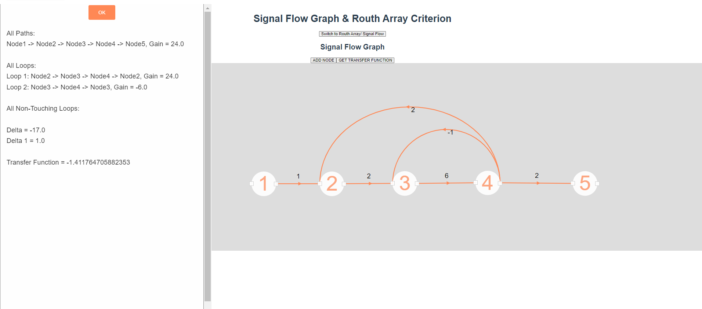
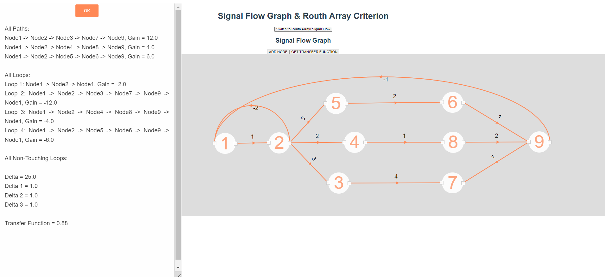
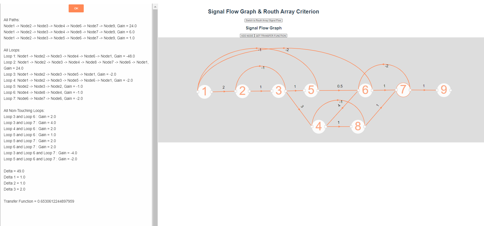
- Simple User Guide:
- Choose the Signal Flow route
- Add the nodes that you need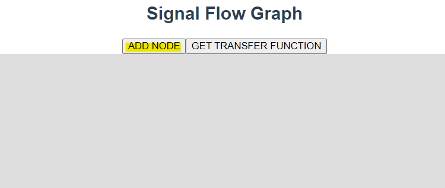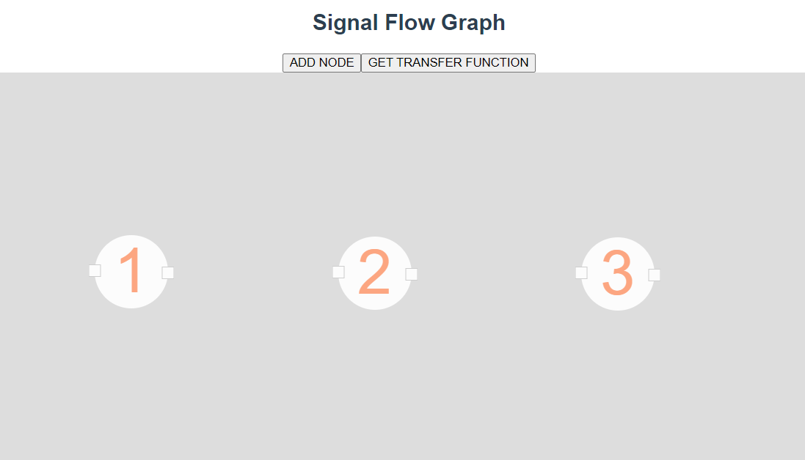
- Drag a link from the output of the source node
- Drop the end of the link on the input of the destination node, you will be asked to enter the weight of the link
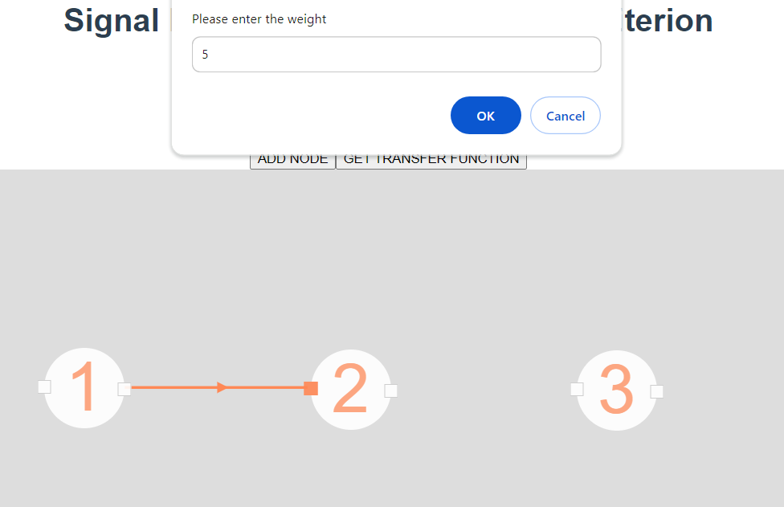
- Feedback links are dragged backward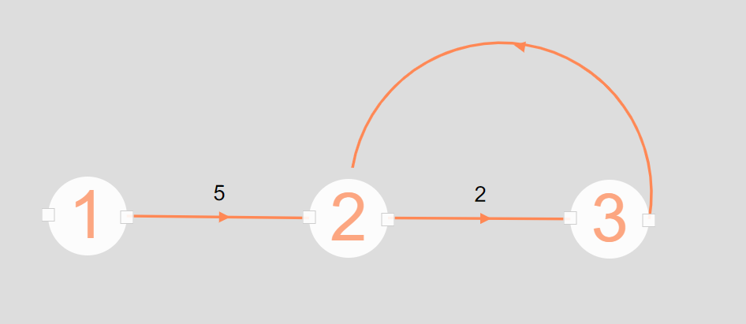
- You can always add an extra node if needed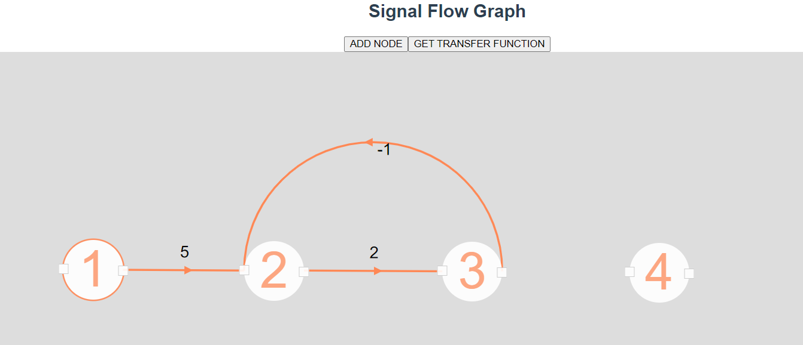
- Get the overall transfer function from the first node (id 1) to the last node (id max) 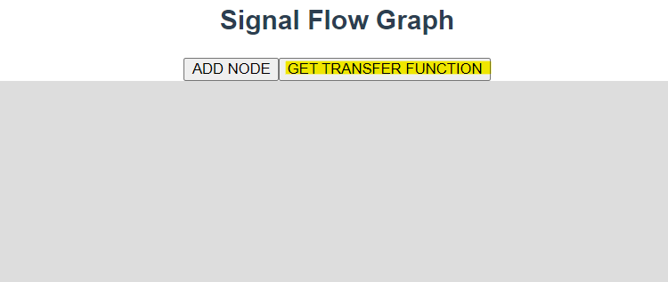
- A detailed info table will appear showing the steps and the final value of the function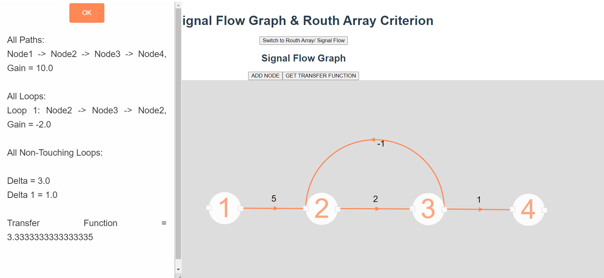
Routh Stability Criterion
- Problem Statement:
- Characteristic equation of the system. Assume that all the coefficients of s0 to sn are given.
- Input example: s5+s4+10s3+72s2+152s+240.
- Main Features:
- Using the Routh system can be determined with stable or not stable.
- Shown a routh table to the user to get known about the process done.
- Having a comment to the system with the reason that makes it unstable in case of it being stable or stable.
- Show all roots of this equation either real and imaginary roots.
- Data Structure:
- Main Modules:
- hasADifferentOrAbsentCoefficient: check if all the coeff has the same sign and no one is absent or not . if it happens no other detection > unstable.
- checkEntireZeroRow : check i has the entire zero row perform derivative to the above row.
- computeRouthArray : to compute all tables of routh.
- allSameSign:to check the change of sign in first col.
- Algorithms Used:
- Sample Runs:
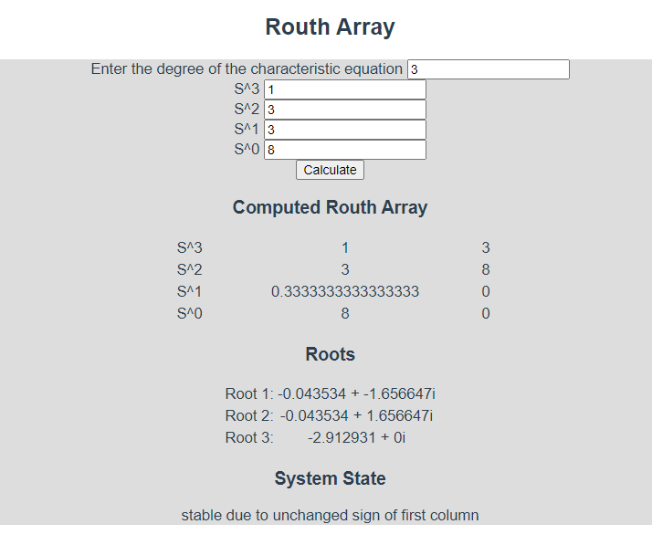
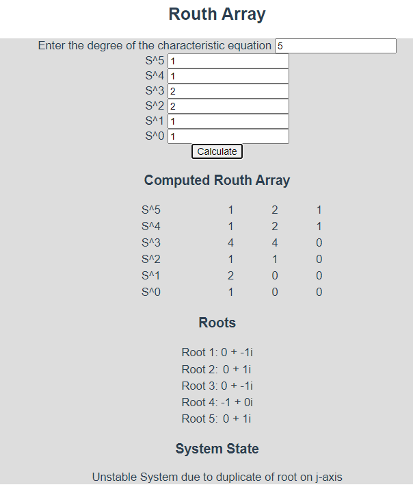
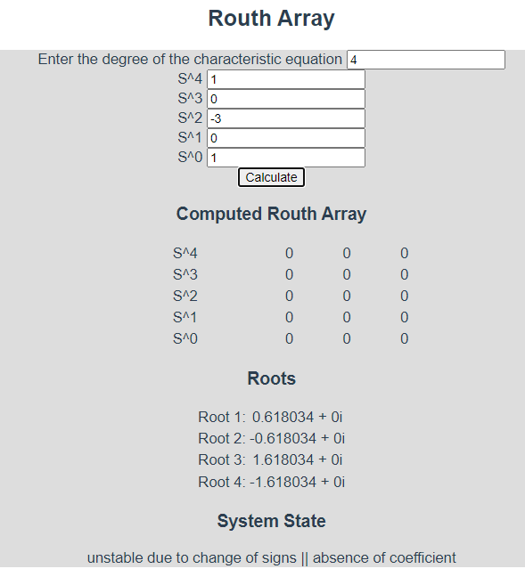

- Simple User Guide:
- Select the “Routh Array” screen from the toggle button
- Enter the degree of the characteristic equation:
- Enter the coefficient of each power of S descendingly:
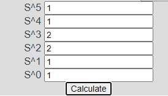
- Hit the “Calculate” button, the answer should appear under it:
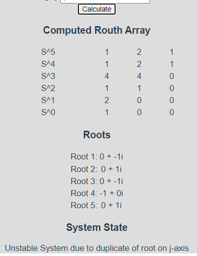